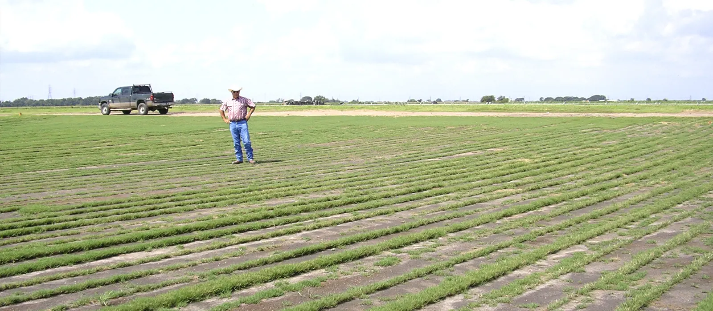

Solutions
The right program for every landscape you manage
From neighborhood parks and ball fields to golf courses and restoration sites, here's where each Sigma formula fits best.

Parks & open space
Durable, green turf on less water
City parks take everything at once: foot traffic, events, pets, mowing and Colorado's dry, high-altitude summers. Shallow-rooted turf is the first to thin and brown out. A biological program builds root depth and soil structure so turf uses irrigation more efficiently and recovers faster.
Sigma's organic granules release nutrients slowly and won't burn, so there's less risk on hot days and less surge growth to mow. The biology in every bag keeps working between applications.
- Slow, even release: fewer surge-mowing cycles
- Stronger roots for drought and heat tolerance
- Low-phosphorus options where P is restricted
- Organic, OMRI Listed formulas for public spaces

Athletic fields
Root mass that stands up to game day
Constant play and mowing wear sports turf down, which is why root mass and depth matter so much on soccer, football and multi-use fields. High-grade biofertilizers supply the nutrients plants need to make their own growth hormones, improving soil health and turf vigor.
Fields stay dense and resilient, and they recover faster from damage, weather and heavy schedules. For quick green-up before a season or tournament, Bio Bridge hybrids pair organic biology with polymer-coated nitrogen.
- Faster recovery from wear and divots
- Improved disease resistance through healthier soil
- Bio Bridge for fast green-up plus long feeding
- Silica to strengthen leaf blades

Landscape, trees & beds
Healthy plantings along trails, medians and civic grounds
Environmental stress such as heat, drought, compaction and transplant shock causes plant decline, wilt and disease. Value-added biologicals create a favorable environment for developing roots, so new plantings establish quickly and mature trees and shrubs stay vigorous.
Each formula lists rates for tree and shrub transplanting by trunk caliper, landscape beds and container stock, making them easy to roll out across a crew.
- Faster establishment of new plantings
- Tree rates by trunk caliper at transplanting
- Bed and container rates on every label
- Reduces reliance on synthetic inputs

Golf courses
Tournament-ready turf through every season
Fine-grade (SGN 110) granules sift into tight canopies on greens and tees without pickup by mowers. They're formulated for spring and fall aeration recovery, midsummer stress, dormant feeding, cool-season overseeding and warm-season transition.
For fairways and roughs, Bio Bridge blends deliver up to 10 weeks of plant response per application.
- Micro-granular sizing for greens and tees
- Aeration recovery and overseeding nutrition
- Low-P 6-2-6 for restricted areas
- Up to 10-week feeding with Bio Bridge

Farms & restoration
Rebuild soil biology on working and recovering land
Modern practices can strip soil of life and structure. Large-grade Sigma biofertilizers combine fast and slow-release organic nutrients with humic acids and beneficial microbes to recharge depleted soils, from vegetable ground and hay fields to reclamation and restoration sites.
Apply on their own or dry-blend with conventional fertilizer to improve performance, with vegetable rates listed by crop on every label.
- Recharge depleted and disturbed soils
- Dry-blend with conventional programs
- Crop-specific vegetable rates
- Non-manure 8-5-1 option
Colorado conditions
Built for high, dry and alkaline ground
Southern Colorado's short seasons, intense sun, low rainfall and watering restrictions are hard on turf and plantings. Here's how a biological program helps.
Stretch irrigation
Mycorrhizal networks and humic acids help roots reach and hold more of the water you apply.
Deeper roots
Biology-driven root growth carries turf through heat and drought.
Rebuild structure
Organic carbon feeds soil life that improves tilth in compacted and depleted soils.
Gentle on sites
Slow-release organic nitrogen won't burn and reduces surge growth.
Planning next season's program?
Tell us about your sites and acreage. We'll recommend products and rates, send labels and SDS sheets for your files, and put together a formal quote.